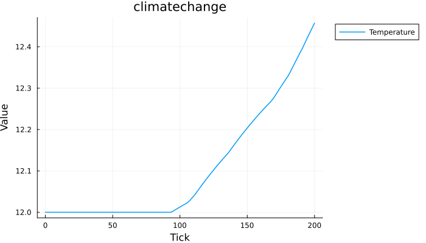
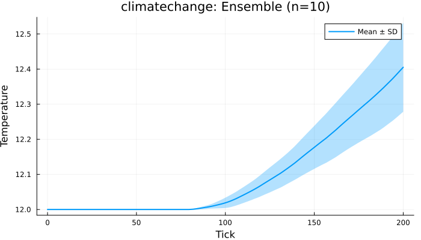
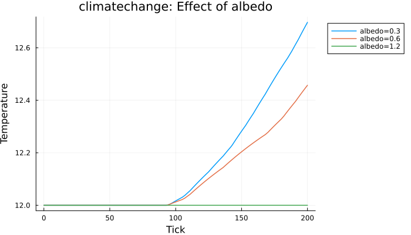

Climate Change
Overview
WHAT IS IT?
This is a model of energy flow in the earth, particularly heat energy. It shows the earth as rose colored, and the surface of the planet is represented by a black strip. Above the strip there is a blue atmosphere and black space at the top. Clouds and carbon dioxide (CO2) molecules can be added to the atmosphere. The CO2 molecules represent greenhouse gases that block infrared light that is emitted by the earth. Clouds block incoming or outgoing sun rays, influencing the heating up or cooling down of the planet.
HOW IT WORKS
Yellow arrowheads stream downward representing sunlight energy. Some of the sunlight reflects off clouds and more can reflect off the earth’s surface.
If sunlight is absorbed by the earth, it turns into a red dot, representing heat energy. Each dot represents the energy of one yellow sunlight arrowhead. The red dots randomly move around the earth, and its temperature is related to the total number of red dots.
Sometimes the red dots transform themselves into infrared (IR) light that heads toward space, carrying off energy. The probability of a red dot becoming IR light depends on the earth’s temperature. When the earth is cold, few red dots generate IR light; when it is hot, most do. The IR energy is represented by a magenta arrowhead. Each carries the same energy as a yellow arrowhead and as a red dot. The IR light goes through clouds but can bounce off CO2 molecules.
There is a relation between the number of red dots in the earth and the temperature of the earth. This is because the earth temperature goes up as the total thermal energy is increased. Thermal energy is added by sunlight that reaches the earth as well as from infrared (IR) light reflected down to the earth. Thermal energy is removed by IR emitted by the earth. The balance of these determines the energy in the earth, which is proportional to its temperature.
There are, of course, many simplifications in this model. The earth is not a single temperature, does not have a single albedo, and does not have a single heat capacity. Visible light is somewhat absorbed by CO2 and some IR light does bounce off clouds. No model is completely accurate. What is important is that a model reacts in some ways like the system it is supposed to model. This model does that, showing how the greenhouse effect is caused by CO2 and other gases that absorb IR.
THINGS TO NOTICE
Watch a single sunlight arrowhead. This is easier if you slow down the model using the slider at the top of the model. You can also use the WATCH A RAY button.
What happens to the arrowhead when it hits the earth? Describe its later path. Does it escape the earth? What happens then? Do all arrowheads follow similar paths?
THINGS TO TRY
Play with the model. Change the albedo and run the model. Add clouds and CO2 to the model and then watch a single sunlight arrowhead. What is the highest earth temperature you can produce?
Run the model with a bright sun but no clouds and no CO2. What happens to the temperature? It should rise quickly and then settle down around 37 degrees. Why does it stop rising? Why does the temperature continue to bounce around? Remember, the temperature reflects the number of red dots in the earth. When the temperature is constant, there are about as many incoming yellow arrowheads as outgoing IR ones. Why?
Explore the effect of albedo holding everything else constant. Does increasing the albedo increase or decrease the earth temperature? When you experiment, be sure to run the model long enough for the temperature to settle down.
Explore the effect of clouds holding everything else constant.
Explore the effect of adding 100 CO2 molecules. What is the cause of the change you observe? Follow one sunlight arrowhead now.
EXTENDING THE MODEL
Try to add some other factors influencing the earth’s temperature. For example, you could add patches of vegetation and then see what happens as they are consumed for human occupation. Also, you could try to add variable albedo to the model, instead of having one value for the whole planet. You could have glaciers with high albedo, and seas with low albedo, and then evaluate what happens when the glaciers melt into the seas.
NETLOGO FEATURES
Note that clouds are actually made up of lots of small circular turtles.
RELATED MODELS
Daisyworld
CREDITS AND REFERENCES
This model is based on an earlier version created in 2005 by Robert Tinker for the TELS project.
HOW TO CITE
If you mention this model or the NetLogo software in a publication, we ask that you include the citations below.
For the model itself:
- Tinker, R. and Wilensky, U. (2007). NetLogo Climate Change model. http://ccl.northwestern.edu/netlogo/models/ClimateChange. Center for Connected Learning and Computer-Based Modeling, Northwestern University, Evanston, IL.
Please cite the NetLogo software as:
- Wilensky, U. (1999). NetLogo. http://ccl.northwestern.edu/netlogo/. Center for Connected Learning and Computer-Based Modeling, Northwestern University, Evanston, IL.
COPYRIGHT AND LICENSE
Copyright 2007 Uri Wilensky.

This model is licensed under the Creative Commons Attribution-NonCommercial-ShareAlike 3.0 License. To view a copy of this license, visit https://creativecommons.org/licenses/by-nc-sa/3.0/ or send a letter to Creative Commons, 559 Nathan Abbott Way, Stanford, California 94305, USA.
NetLogo itself is free software for non-commercial use under the terms of the GNU General Public License (see full license information here).
To inquire about commercial licenses for either NetLogo or specific models from the models library, please contact netlogo-commercial-admin@ccl.northwestern.edu.
Parameters
| Parameter | Type | Default | Description |
|---|---|---|---|
albedo | Float64 | 0.6 | albedo |
sun_brightness | Float64 | 1.0 | sun brightness |
num_CO2 | Int | 0 | CO2 molecules added at setup (0 by default) |
grid_width | Int | 49 | (-24..24) |
grid_height | Int | 31 | (-8..22) |
earth_top_y | Int | 9 | pycor=0 → y=9 in 1-based |
sky_top_y | Int | 26 | pycor=17 → y=26 in 1-based |
max_ticks | Int | 200 | max ticks |
Source Code
The Julia code to run this model:
using ArkModelZoo
_, trajectory = run_climatechange()Time Series

Ensemble Runs
Ten replicates with different random seeds, showing mean ± standard deviation.

Parameter Sensitivity
Varying albedo.

Appendix: Source Code
This model is implemented in the Ark.jl Entity-Component-System (ECS) framework. The code is split into five files, each with a distinct role:
- Parameters: a mutable struct holding all configurable values.
- Components: lightweight data types attached to individual entities (agents).
- Resources: world-level shared state accessible to all systems.
- Systems: functions that operate on entities each tick, defining model behavior.
- Model: wiring that assembles the world, registers resources and systems, and provides the run entry point.
Parameters (parameters.jl)
The parameter struct uses @kwdef so that every field has a default value and can be overridden by keyword. These defaults match the original NetLogo model’s slider settings.
Base.@kwdef mutable struct ClimateChangeParams
albedo::Float64 = 0.6
sun_brightness::Float64 = 1.0
num_CO2::Int = 0 # CO2 molecules added at setup (0 by default)
grid_width::Int = 49 # (-24..24)
grid_height::Int = 31 # (-8..22)
earth_top_y::Int = 9 # pycor=0 → y=9 in 1-based
sky_top_y::Int = 26 # pycor=17 → y=26 in 1-based
max_ticks::Int = 200
seed::Int = 42
endComponents (components.jl)
Components are lightweight data types attached to individual entities (agents). Mutable structs hold per-entity state, while empty tag structs act as markers for the ECS query system to efficiently filter entities.
# All climate particles share the same component set.
# Breed: 1=ray, 2=heat, 3=IR, 4=CO2
const BREED_RAY = 1
const BREED_HEAT = 2
const BREED_IR = 3
const BREED_CO2 = 4
mutable struct ClimateParticle
breed::Int
x::Float64
y::Float64
heading::Float64
end
ClimateParticle() = ClimateParticle(BREED_RAY, 1.0, 1.0, 0.0)Resources (resources.jl)
Resources are world-level singletons shared across all systems, used for global state and aggregate statistics.
mutable struct ClimateStats
temperature::Float64
end
ClimateStats() = ClimateStats(12.0)Systems (systems.jl)
Systems contain the model logic and execute in a defined order each tick. Each system struct implements either initialize! (run once at setup) or update! (run every tick).
# --- Helpers ---
function _climate_can_move(x::Float64, y::Float64, heading::Float64, dist::Float64, w::Int, h::Int)
θ = deg2rad(heading)
nx = x + sin(θ) * dist
ny = y + cos(θ) * dist
px = round(Int, nx)
py = round(Int, ny)
return 1 <= px <= w && 1 <= py <= h
end
function _climate_forward!(p::ClimateParticle, dist::Float64)
θ = deg2rad(p.heading)
p.x += sin(θ) * dist
p.y += cos(θ) * dist
end
function _climate_is_blue(y::Float64, earth_top_y::Int)
return round(Int, y) > earth_top_y
end
# --- Initialization ---
struct InitClimateChangeSystem <: System end
function initialize!(::InitClimateChangeSystem, world::World)
params = get_resource(world, ClimateChangeParams)
rng = get_resource(world, RNGResource).rng
# Optionally create CO2 molecules in the atmosphere
for _ in 1:params.num_CO2
x = Float64(rand(rng, 1:params.grid_width))
y = Float64(rand(rng, (params.earth_top_y + 1):params.sky_top_y))
heading = rand(rng) * 360.0
new_entity!(world, (ClimateParticle(BREED_CO2, x, y, heading),))
end
return nothing
end
# --- Sunshine ---
struct RunSunshineSystem <: System end
function update!(::RunSunshineSystem, world::World)
params = get_resource(world, ClimateChangeParams)
rng = get_resource(world, RNGResource).rng
w, h = params.grid_width, params.grid_height
earth_top_y = params.earth_top_y
# Move existing rays; die if can't move
to_remove = Entity[]
to_convert = Entity[] # rays that hit earth
for (eids, particles) in Query(world, (ClimateParticle,))
@inbounds for i in eachindex(eids)
p = particles[i]
p.breed == BREED_RAY || continue
if !_climate_can_move(p.x, p.y, p.heading, 0.3, w, h)
push!(to_remove, eids[i])
else
_climate_forward!(p, 0.3)
if p.y <= Float64(earth_top_y)
push!(to_convert, eids[i])
end
end
end
end
for eid in to_remove
remove_entity!(world, eid)
end
# Encounter earth: reflect (albedo) or absorb (become heat)
for eid in to_convert
p = get_components(world, eid, (ClimateParticle,))[1]
if rand(rng, 0:99) < round(Int, 100 * params.albedo)
p.heading = 180.0 - p.heading
else
p.heading += Float64(rand(rng, 0:44) - rand(rng, 0:44))
p.breed = BREED_HEAT
end
end
# Create new sunshine
if 10.0 * params.sun_brightness > rand(rng, 0:49)
# NetLogo: setxy (random 10) + min-pxcor max-pycor
# min-pxcor=-24 → 1-based x = random(10)+1, y = max_y
x = Float64(rand(rng, 0:9) + 1)
y = Float64(h)
new_entity!(world, (ClimateParticle(BREED_RAY, x, y, 160.0),))
end
return nothing
end
# --- Heat ---
struct RunHeatSystem <: System end
function update!(::RunHeatSystem, world::World)
params = get_resource(world, ClimateChangeParams)
rng = get_resource(world, RNGResource).rng
stats = get_resource(world, ClimateStats)
w, h = params.grid_width, params.grid_height
earth_top_y = params.earth_top_y
# Count heats for temperature update
n_heats = 0
for (_, particles) in Query(world, (ClimateParticle,))
@inbounds for i in eachindex(particles)
if particles[i].breed == BREED_HEAT
n_heats += 1
end
end
end
stats.temperature = 0.99 * stats.temperature + 0.01 * (12.0 + 0.1 * n_heats)
# Process each heat
heat_list = Entity[]
for (eids, particles) in Query(world, (ClimateParticle,))
@inbounds for i in eachindex(eids)
if particles[i].breed == BREED_HEAT
push!(heat_list, eids[i])
end
end
end
Random.shuffle!(rng, heat_list)
for eid in heat_list
p = get_components(world, eid, (ClimateParticle,))[1]
dist = 0.5 * rand(rng)
if _climate_can_move(p.x, p.y, p.heading, dist, w, h)
_climate_forward!(p, dist)
else
p.heading = 180.0 - p.heading
end
if p.y >= Float64(earth_top_y)
# pxcor = x - 25; condition: pxcor > 0 and pxcor < max_pxcor - 8 = 16
pxcor = p.x - 25.0
if stats.temperature > 20.0 + rand(rng, 0:39) && pxcor > 0.0 && pxcor < 16.0
p.breed = BREED_IR
p.heading = 20.0
else
p.heading = Float64(100 + rand(rng, 0:159))
end
end
end
return nothing
end
# --- IR ---
struct RunIRSystem <: System end
function update!(::RunIRSystem, world::World)
params = get_resource(world, ClimateChangeParams)
rng = get_resource(world, RNGResource).rng
w, h = params.grid_width, params.grid_height
earth_top_y = params.earth_top_y
ir_list = Entity[]
for (eids, particles) in Query(world, (ClimateParticle,))
@inbounds for i in eachindex(eids)
if particles[i].breed == BREED_IR
push!(ir_list, eids[i])
end
end
end
Random.shuffle!(rng, ir_list)
to_remove = Entity[]
for eid in ir_list
p = get_components(world, eid, (ClimateParticle,))[1]
if !_climate_can_move(p.x, p.y, p.heading, 0.3, w, h)
push!(to_remove, eid)
continue
end
_climate_forward!(p, 0.3)
if p.y <= Float64(earth_top_y)
p.breed = BREED_HEAT
p.heading += Float64(rand(rng, 0:44) - rand(rng, 0:44))
end
# Check for CO2 on same patch
my_px = round(Int, p.x)
my_py = round(Int, p.y)
co2_here = false
for (_, particles2) in Query(world, (ClimateParticle,))
@inbounds for j in eachindex(particles2)
q = particles2[j]
if q.breed == BREED_CO2 && round(Int, q.x) == my_px && round(Int, q.y) == my_py
co2_here = true
break
end
end
co2_here && break
end
if co2_here
p.heading = 180.0 - p.heading
end
end
for eid in to_remove
remove_entity!(world, eid)
end
return nothing
end
# --- CO2 ---
struct RunCO2System <: System end
function update!(::RunCO2System, world::World)
params = get_resource(world, ClimateChangeParams)
rng = get_resource(world, RNGResource).rng
w, h = params.grid_width, params.grid_height
earth_top_y = params.earth_top_y
co2_list = Entity[]
for (eids, particles) in Query(world, (ClimateParticle,))
@inbounds for i in eachindex(eids)
if particles[i].breed == BREED_CO2
push!(co2_list, eids[i])
end
end
end
Random.shuffle!(rng, co2_list)
for eid in co2_list
p = get_components(world, eid, (ClimateParticle,))[1]
p.heading += Float64(rand(rng, 0:50) - 25)
dist = 0.05 + rand(rng) * 0.1
# Bounce off non-blue patches (earth and underground)
if !_climate_is_blue(p.y + cos(deg2rad(p.heading)) * dist, earth_top_y)
p.heading = 180.0 - p.heading
end
if _climate_can_move(p.x, p.y, p.heading, dist, w, h)
_climate_forward!(p, dist)
end
end
return nothing
end
# --- Termination ---
struct ClimateChangeTerminationSystem <: System end
function update!(::ClimateChangeTerminationSystem, world::World)
params = get_resource(world, ClimateChangeParams)
tick = get_resource(world, Tick)
if tick.tick + 1 >= params.max_ticks
get_resource(world, Terminate).stop = true
end
return nothing
endModel (model.jl)
The model file assembles all pieces: it creates the ECS World with the required component types, registers resources, builds the Scheduler with systems in execution order, and exposes the public run entry point. The observer pattern records the trajectory each tick.
function climatechange_world(; initial_capacity::Int = 1024)
return World(
ClimateParticle;
initial_capacity = initial_capacity,
allow_mutable = true,
)
end
function climatechange_systems()
return (
InitClimateChangeSystem(),
RunSunshineSystem(),
RunHeatSystem(),
RunIRSystem(),
RunCO2System(),
ClimateChangeTerminationSystem(),
)
end
function climatechange_model(params::ClimateChangeParams = ClimateChangeParams())
world = climatechange_world()
_add_standard_resources!(world, params)
add_resource!(world, ClimateStats())
scheduler = Scheduler(world, climatechange_systems())
initialize!(scheduler)
return scheduler
end
struct ClimateChangeObserver end
function climatechange_headers(::ClimateChangeObserver)
return ["Temperature"]
end
function climatechange_values(::ClimateChangeObserver, world::World)
stats = get_resource(world, ClimateStats)
return Float64[stats.temperature]
end
function run_climatechange(; params::ClimateChangeParams = ClimateChangeParams(), observe::Bool = true)
return _run_model(climatechange_model, ClimateChangeObserver(), climatechange_values; params, observe)
end